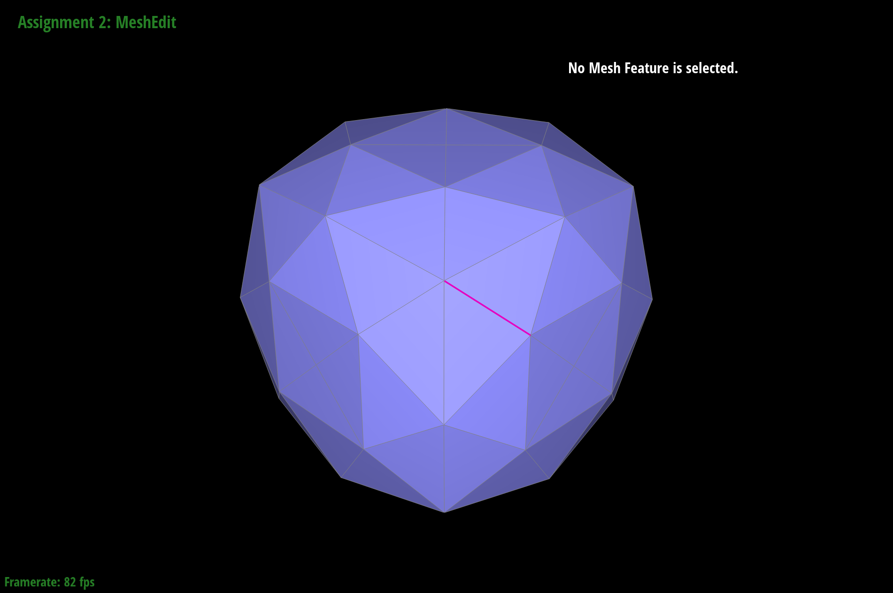

Overview
In the first part, we learned about Bezier curves; sepcifically, how to use a set of discrete control points to evaluate a Bezier curve. In the next part, we learned how mesh objects are implemented as data structures and how loop subdivision works to create a more detailed mesh. In a way, we can think of Beziers and loop subdivision as ways of antialiasing; in both cases, we are upsampling to get a "smoother" look. An interesting thing that we picked up on is the computational resources needed to render all the meshes and curves as we tried to upsample and smooth out the objects in this homework. Some optimizing definitely needs to be done in our implementations.
Section I: Bezier Curves and Surfaces
Part 1: Bezier Curves with 1D de Casteljau Subdivision
Briefly explain de Casteljau's algorithm and how you implemented it in order to evaluate Bezier curves.
de Casteljau's algorithm takes the n control points and lerps each pair of adjacent points
along with some scalar t to get n-1 intermediate points. This process repeats
recursively until we get a single point that sits on the Bezier curve.

Show screenshots of each step / level of the evaluation from the original control points down to the final evaluated point. Press E to step through. Toggle C to show the completed Bezier curve as well.
|
|
|
|
|
|
|
|
|
|
|
Show a screenshot of a slightly different Bezier curve by moving the original control points around and modifying the parameter \(t\) via mouse scrolling.
Part 2: Bezier Surfaces with Separable 1D de Casteljau
Briefly explain how de Casteljau algorithm extends to Bezier surfaces and how you implemented it in order to evaluate Bezier surfaces.
de Casteljau algorithm extends to Bezier surfaces by treating a point on each 1D bezier curve on the grid row as a control point. This allows us
to calculate a final point from a group of 1D curves (so a total 2D grid of control points) which gives us a final point on a 2D surface. We implemented this by using
evaluateStep recursively in evaluate1D to get the final point on a Bezier curve. Then, we evaluate
these final curve points along the other axis with the other parameter v to get the final point on a 2D surface.
If we evaluate this for all u, v, we get a Bezier surface.
Show a screenshot of bez/teapot.bez (not .dae) evaluated by your implementation.
Section II: Triangle Meshes and Half-Edge Data Structure
Part 3: Area-Weighted Vertex Normals
Briefly explain how you implemented the area-weighted vertex normals.
We begin by initializing a zero Vector3 (called N) and creating a while loop to
loop through the neighboring triangles of the vertex. Within each iteration, we grab the other two points
of the current triangle and use the 3 points to calculate the area of the triangle. This area along with the current
face's normal() allows us to calculate an area-weighted normal. We sum up all of these for each triangle in
N and return the normalized vector.
Show screenshots of dae/teapot.dae (not .bez) comparing teapot shading with and without vertex normals. Use Q to toggle default flat shading and Phong shading.
|
|
|
Part 4: Edge Flip
Briefly explain how you implemented the edge flip operation and describe any interesting implementation / debugging tricks you have used.
In order to make sure we got all the pointers correct, we began by drawing out a diagram with labels for each mesh object and assigning
variables to them. In our code, these pointer variables are h1 - h6, a - d, f, and fOpposite. Then, we reassigned the necessary
object's pointers according to the new flipped drawing. The drawings were super helpful and actually allowed us to complete this method
with no bugs!
Show screenshots of the teapot before and after some edge flips.
|
|
|
Write about your eventful debugging journey, if you have experienced one.
Copied from above: Since we took care to assign pointers before reassigning anything, and drew out figures for the original and flipped objects, we completed this method with no bugs!
Part 5: Edge Split
Briefly explain how you implemented the edge split operation and describe any interesting implementation / debugging tricks you have used.Similar to part 4, we used a labeled drawing for the original and split figures to help us assign pointers beforehand and figure out which objects needed to have their pointers reassigned. Our general structure for the method was grabbing all necessary objects, creating new objects and assigning the pointers of the new faces, edges, and vertex, and then assigning the pointers of the new halfedges. Finally, we reassigned any necessary pointers in the original mesh objects.
Show screenshots of a mesh before and after some edge splits.
|
|
|
Show screenshots of a mesh before and after a combination of both edge splits and edge flips.
|
|
|
Write about your eventful debugging journey, if you have experienced one.
We did experience a bug for this method. The first was not using the correct method to construct new objects (i.e. we were using
VertexIter() instead of newVertex(). Then, we realized our split was sometimes doing weird things where
one of the edges would disappear even though the faces, vertices, and halfedges were all correct. After splitting some edges in different
orders, we realized that the edge that was disappearing was either the topLeftEdge or topRightEdge variable in our code.
This was because we were forgetting to reassign the pointers of one of their associated halfedges. Once we added these two lines of code
(h13->setNeighbors() and h14->setNeighbors()), the bug was fixed.
If you have implemented support for boundary edges, show screenshots of your implementation properly handling split operations on boundary edges.
YOUR RESPONSE GOES HERE
Part 6: Loop Subdivision for Mesh Upsampling
Briefly explain how you implemented the loop subdivision and describe any interesting implementation / debugging tricks you have used.
We began by finding the updated positions of old and new vertices using the appropriate neighbor weight equation. Then, we actually split every original
edge on the mesh. Next, we flipped only the new blue edges (referencing the diagram in spec), that connected an old vertex and a new vertex utilizing the isNew attribute. Finally,
we set each vertex position to the updated position stored in its newPosition attribute. One bug we encountered was infinite looping, so we used break points
to help us figure out where the infinite loop was happening (in our case, it was from the edges splitting forever).
Take some notes, as well as some screenshots, of your observations on how meshes behave after loop subdivision. What happens to sharp corners and edges? Can you reduce this effect by pre-splitting some edges?
Sharp corners and edges seem to be "smoothed out" pretty well as loop subdivision continues. However, we noticed that vertices with a low degree will have the sharpest corners throughout the loop subdivisions. As seen in the images below, the first image shows the only vertex in the cube with degree 3, which is the lowest of all the vertices. After doing a couple of rounds of subdivision, the area of the original vertex creates a sharp corner in the mesh. This effect is minimized through preprocessing (as seen in the next question) by evening out the degree of all the vertices before subdivision so there isn't a difference in degree between the initial vertices.

|
|
|
|
|
|
|
While experimenting preprocessing techniques, we decided to split each of the 12 edges of the cube in the original topology. As a result, the low degree vertex had the same degree after the preprocessing, while the other vertices had their degree increased, which increased the difference in degree between the original vertices. After a couple of subdivision iterations, the low degree vertex was very sharp in the mesh.
|
|
|
|
|
Load dae/cube.dae. Perform several iterations of loop subdivision on the cube. Notice that the cube becomes slightly asymmetric after repeated subdivisions. Can you pre-process the cube with edge flips and splits so that the cube subdivides symmetrically? Document these effects and explain why they occur. Also explain how your pre-processing helps alleviate the effects.
The slightly asymmetric effects occur because the initial topology is not symmetrical. We can alleviate this by making the initial topology symmetric: one way of doing this is to pre-split each face's edge. As shown below in the first image, every face of the cube has an "X" on it. This adds more axes of symmetry to the topology, and as a result, the cube is more symmetrical with smoother edges compared to the non-preprocessed topology. Note that this set of "X" edges on each face also creates symmetrical corners in terms of vertex degrees (the difference between the max degree vertex and the minimum degree vertex is 0), which is one way of reducing the "sharp corner" observation made in the previous question.
|
|

|
|
|
|
|
|
|
If you have implemented any extra credit extensions, explain what you did and document how they work with screenshots.
YOUR RESPONSE GOES HERE
Part 7 (Optional, Possible Extra Credit)
Save your best polygon mesh as partsevenmodel.dae in your docs folder and show us a screenshot of the mesh in your write-up.YOUR RESPONSE GOES HERE
Include a series of screenshots showing your original mesh and your mesh after one and two rounds of subdivision. If you have used custom shaders, include screenshots of your mesh with those shaders applied as well.
YOUR RESPONSE GOES HERE
Describe what you have done to enhance your mesh beyond the simple humanoid mesh described in the tutorial.
YOUR RESPONSE GOES HERE